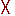

Coverage Data in the Source Window
The meaning of the values in each of the columns are detailed in Table 1.
Column |
Value represents |
|---|---|
Hits |
In “byinstance” mode: how many times that line of code was executed In “byfile” mode: the sum of hits of that line from all the instances of the corresponding DU. |
BC (branch coverage) |
the branch executed Only "true" counts are displayed, with the exception of the AllFalse branch (if any). The AllFalse count is listed next to the first "if" condition in an if-else tree that does not contain a terminating catch-all "else" branch. You can determine the branch false count by subtracting counts in the BC column from the Hits column. |
These columns provide an immediate visual indication about how your source code is executing. The code coverage indicator icons include check marks, ‘X’s and ‘E’s. A description of each code coverage indicator icon is provided in Table 2.
Detailed Coverage Information
To see more information about any coverage item, click the indicator icon, or in the Hits or BC column for the line of interest: In the case of a multiple-line item, this would be last line of the item. If the Coverage Details window is open, this action brings up detailed coverage information for that line. If the window is not open, a right click menu option is available to open it.
For example, when you select an expression in the Code Coverage Analysis’ Expression Analysis window, and you click in the column of a line containing an expression, the associated truth tables appear in the Coverage Details window. Each line in the truth table is one of the possible combinations for the expression. The expression is considered to be covered (gets a green check mark) if the entire truth table is covered.
Coverage Numbers Mismatch Source
If coverage numbers are mismatched between Code Coverage Analysis windows and the Source window, check to make sure that both are being calculated the same — either “by file” or “by instance”.
Hover Behavior
When you hover over statements, conditions or branches in the Source window, the Hits and BC columns display the coverage numbers for that line of code. For example, in Figure 1, the blue highlighted line shows that the expression (b=b’b1) was hit 1 time. The value in the Hits column shows the total coverage for all items in the truth table (as shown in the Coverage Details window when you click the specific line in the hits column).
Source Window Code Coverage Indicator Icons
Icon |
Description/Indication |
|---|---|
|
All statements, branches (true), conditions, or expressions on a particular line have been executed |
 |
Multiple kinds of coverage on the line were not executed |
True branch not executed (BC column) |
|
False branch not executed (BC column) |
|
Condition not executed (Hits column) |
|
Expression not executed (Hits column) |
|
Branch not executed (Hits column) |
|
Statement not executed (Hits column) |
|
Indicates a line of code to which active coverage exclusions have been applied. Every item on the line is excluded; none are hit |
|
Some excluded items are hit |
|
Some items are excluded, and all items not excluded are hit |
|
Some items are excluded, and some items not excluded have missing coverage |
|
Auto exclusions have been applied to this line. Hover the cursor over the EA and a tool tip balloon appears with the reason for exclusion |
To display only numbers in Hits and BC columns, choose .
When the source window is active, you can skip to "missed lines" three ways:
Select and
Click the Previous zero hits and Next zero hits icons on the toolbar.
press Shift-Tab (previous miss) or Tab (next miss)
Controlling Data Displayed in a Source Window
The menu contains several commands for controlling coverage data display in a Source window.
Hide/Show coverage data — toggles the Hits column off and on.
Hide/Show branch coverage — toggles the BC column off and on.
Hide/Show coverage numbers — displays the number of executions in the Hits and BC columns rather than check marks and Xs. When multiple statements occur on a single line an ellipsis ("...") replaces the Hits number. In such cases, hover the cursor over each statement to highlight it and display the number of executions for that statement.
Show coverage By Instance — displays only the number of executions for the currently selected instance in the Main window workspace.